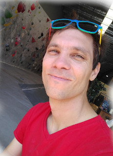

Openings
-
Honours and PhD students: If you are enthusiastic about mixing computational and wet lab biomedicine, we want you!
-
Postdocs with burning passion are always welcome.
Especially if you are not a white male, please consider: let’s make computational research more diverse!
Please contact Fabio at fabio.zanini@unsw.edu.au.
Principal Investigator
Fabio Zanini

I love single cell assays, fighting viral infections, algorithms, and rock climbing.
Collaborations
- Shirit Einav, Stanford University
- Cristina Alvira, Stanford University
- David Cornfield, Stanford University
- Michael S. Diamond, Washington University in St. Louis
- Nate Cira, Rowland Institute at Harvard University
- John Pimanda, UNSW Lowy Cancer Research Centre
- Ashwin Unnikrishnan, UNSW Lowy Cancer Research Centre
Friends
Some friendly labs that are full of smart, kind people:
 cazencotte
cazencotte
 neherlab
neherlab
 Einav lab
The Big One
Alvira lab
bedford.io
Goo Lab
Einav lab
The Big One
Alvira lab
bedford.io
Goo Lab
 ciralab
ciralab